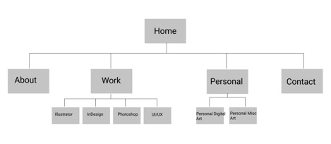
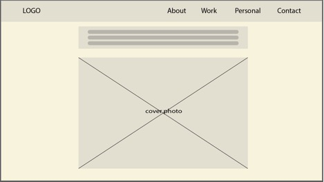
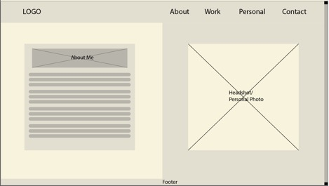
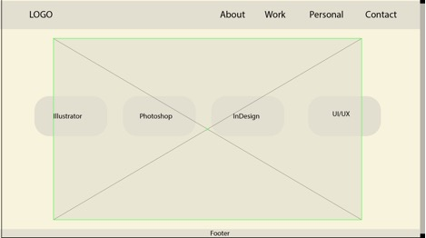
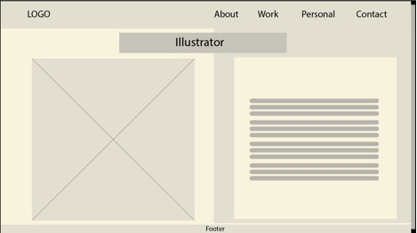
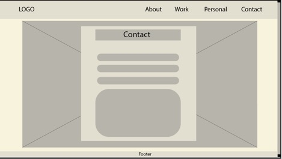

Client
& Topic
My final website
project will be a website for my own personal portfolio and graphic design
resume. This is my final year at the University of Maryland, Global Campus. As I
start to reach out to companies for employment opportunities, I will need to
build a clean and enticing website that showcases my work and personality both inside
and outside of the office.
Development
Process and Engagement
I will be designing
this website for myself as a personal portfolio. As someone with an Adobe Suite
membership, I will use that platform to research what other graphic designers’
portfolios look like, specifically through Adobe Behance. Adobe Behance gives you the option
to narrow your search down to the exact platform that you generally use,
whether it be Adobe Illustrator, Adobe XD (UI/UX Design), Adobe Photoshop, etc.
Through each platform, designers from all over the world showcase their work
and personal portfolios. As my expertise is in Adobe Illustrator and Adobe
InDesign, I will research the top-rated portfolios on those sub-groups and take
note of my favorite aspects of each website so that I can implement those practices
on my personal portfolio website.
Testing
Prior to the
launch of my personal portfolio website, to ensure that everything I’ve created
works as designed without errors, I will start with creating a handwritten
resume and printed version of my best portfolio pieces. The hard copies will be
reviewed by my success coach, partner, and family members to ensure the content
is useful and concise. This will then be used as a frame for my website to make
sure that it meets the requirements of a genuine resume and portfolio. When complete,
I will ask my success coach, partner, and family members to look at the website
to compare it to the hard copy. They will determine if it flows the same way
and if the website is clear. I will focus on these pages of the website by
asking:
· Home
Does
this front page draw someone in within the first few seconds of looking at it?
Is it clear that this is a front page for my personal portfolio?
· About
Does
this page have a personal feel? Does it properly showcase my past and current
experiences? Does the reader get to know my personality a bit more by reading about
me, the ‘author’ of the website? Lastly, does this information and this headshot
make the reader want to see more of my work to learn more about me?
· Work
Is
this section organized well to divide my work between the different skillsets
(ex: Illustrator tab, Photoshop tab, InDesign tab)? Is it clear what the
audience should be looking at? Are my skills being showcased properly? Does
this page nicely flow and is it easy to navigate my different pieces? Does it
encourage the user to click on my personal art page to learn more about me?
· Personal/Art
Does
this page showcase a different side to me, more specifically, what would it be
like to work with me? Are there any hobbies or themes amongst my art that the
user and/or potential employer can relate to here?
· Contact
Have I listed all methods of contact? Are all
my desired social media links shared? Does it seem intuitive on how to reach
out to me? Have I listed an estimated reply time (reply within 24 hours)?
Description
I am a current
fourth-year student at the University of Maryland, Global Campus majoring in
Digital Media and Web Technology. The skills I’ve learned best so far are Adobe
Illustrator, Adobe InDesign, Adobe Photoshop, and HTML/CSS. My goal is to find
a job that allows me to use these skills in some way, ideally through freelance
graphic design, front-end web design, or brand design as a career path. The purpose
of this website is to showcase my level of skill in each of those categories to
a potential employer or client.
This website will
be designed specifically for employers who are willing to collaborate and pay
for my design work. The intended audience is someone who needs a graphic,
brand, and/or front-end web designer to create something. While my target audience
is ideally in Chicago, where I will be moving to at the end of this year, all
this work can be completed digitally, therefore my audience can be opened to
anyone willing to receive remote design work as well. This will allow for me to
reach a wider audience. An example persona listed below:
1)
Matthew
Kujawinski
Director of UX and Content Design Team at Accenture
Located in Chicago, Illinois
Willing to allow employees work remotely
Seeking Associate Visual Designer for 3-month
contract with Fjord
Seeking employee with a BA, 1+ year of
experience, knowledge in Adobe Creative Suit
and creating digital prototypes.
Because this
website will be designed for an employer like the example listed above, the
website will have a professional design. All the content will have to be
created by myself so that I may fully showcase my own abilities and strengths.
This will also show my target audience, an employer, my creative process and personal design style both in digital media and
written copy. As I am constantly designing new pieces and will be working with
different people as a freelance artist, I will update my website each time I
have completed a full design process. I will also update my contact information
as needed and my personal work/hobbies page whenever I create something in my
free time.
Growth
and Maintenance
To continue growing
and evolving over time, I will have to personally continue to create digital
designs in different areas such as InDesign, Photoshop. To showcase my HTML/CSS
skills, I will conduct website maintenance once a month to ensure that my
website is up-to-date with the current design and
accessibility standards, as they are always evolving with societal and cultural
changes. It is important that my website is updated and maintained at a minimum
of once a month so that employers can see that I am using my time to create,
solve design problems, and use my skills.
Organization
(Wireframes)
The website will
be designed in a hierarchal format, starting from the homepage
and branching out into sub-pages. The four main sub-pages will be the “About”, “Work”,
“Personal” and “Contact” pages. Within the “Work” page there will be four
sub-pages and within the “Personal” page there will be two sub-pages, each
labeled below in the flowchart. Each “Work” sub-page will showcase a different
skill (Illustrator, InDesign, Photoshop, and UI/UX Design). The “Personal” page
will be divided into my personal, free-time digital art and personal miscellaneous
art (pottery, embroidery, painting). The “About’ and “Contact” pages are single
page. Wireframes are attached below to demonstrate the rough look of the
website and how content will be organized on each page.

Homepage

About
Me 
Work
Page, where the user can choose which page to see

Layout
for Illustrator, Photoshop, InDesign, UI/UX, Personal Digital and Personal
Misc. Pages, slide
(Image
+ Description will alternate sides with each project)
Contact
Page

Security
There will be no
need for the user to create an account, as well as no need for the website to
be password protected. I will not be including an e-commerce aspect as I do not
have a goal to sell anything, but to simply showcase my work. I will be sure to
keep my website safe by making sure it is up to date, browse security software
and/or plugins, and use HTTPS vs HTTP.
Web
Hosting
When looking for the right web host, I will be checking for the following
criteria: adequate storage space, strong security features (ex: SSL), 24/7 customer
service report in the case of an issue (example: website is down), adequate
bandwidth, various server locations, scalability in the case that my website
grows, backups, and fair pricing. The most important features for my personal
website at the launch phase will be fair pricing and customer service support; quick
response and resolution time operating 24/7 is key and it is even more
important that this is all within my personal budget for a web host.
The website will be using HTML, CSS, and Javascript
as programming/scripting languages to operate. According to network
solutions, the domain name I will be using is “imanhaidarzada.com”. It is personal
to my name and users will not be confused as to where they’re being directed
to.
Marketing
My website will
be marketed through my social media accounts such as Instagram, YouTube,
Facebook, Twitter, LinkedIn, Indeed.com, Adobe Behance, and through
the use of SEO (search engine optimization). During the beginning phases
of building the website, I will incorporate meta-tags, keywords, and titles
that uniquely correspond with the information on each page to practice good
SEO.